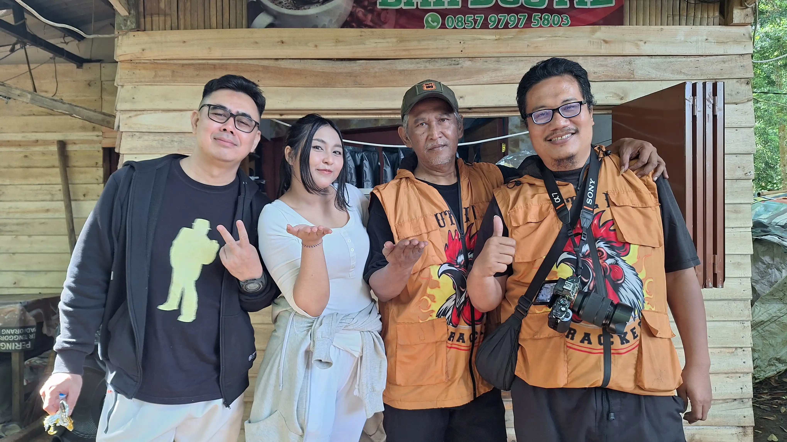

Event
Kolaborasi Seru di Fun Bike PLN 2026: Danendra Tour & Travel x Gunawan Satyakusuma

Event olahraga sekaligus wisata kembali menghadirkan pengalaman tak terlupakan di awal Mei ini. Pada tanggal 1 Mei 2026, kegiatan Fun Bike PLN 2026 sukses digelar dengan penuh semangat, menghadirkan rute indah dan suasana kebersamaan yang hangat di kawasan Ciwidey hingga Kebun Teh Gambung.
Kolaborasi antara Danendra Tour & Travel dan Gunawan Satyakusuma kembali menjadi bagian penting dalam kesuksesan acara ini. Keduanya menghadirkan layanan terbaik di bidang perjalanan dan dokumentasi, memastikan peserta tidak hanya menikmati perjalanan, tetapi juga membawa pulang kenangan yang tak terlupakan.
Perpaduan Wisata dan Olahraga
Fun Bike PLN 2026 bukan sekadar kegiatan bersepeda biasa. Dengan rute sejauh kurang lebih 23 km, peserta diajak menyusuri jalur alam yang memanjakan mata—mulai dari udara segar pegunungan, hamparan kebun teh, hingga suasana pedesaan yang asri.
Kegiatan dimulai sejak pagi hari dengan registrasi dan persiapan, dilanjutkan dengan beberapa etape perjalanan yang dirancang aman sekaligus menyenangkan. Setiap titik perjalanan juga dilengkapi dengan fasilitas pendukung seperti water break, tim safety riding, hingga dokumentasi profesional.
Peran Penting Dokumentasi
Di balik keseruan event, dokumentasi menjadi elemen penting yang tidak bisa diabaikan. Di sinilah peran Gunawan Satyakusuma hadir untuk mengabadikan setiap momen—mulai dari start, perjalanan, hingga garis finish.
Dengan tim profesional dan peralatan lengkap, setiap ekspresi kebahagiaan peserta, keindahan lanskap, serta dinamika acara berhasil direkam dengan kualitas tinggi, baik dalam bentuk foto maupun video.
Pengalaman Tanpa Repot
Sementara itu, Danendra Tour & Travel memastikan seluruh aspek perjalanan berjalan lancar. Mulai dari pengaturan rute, koordinasi peserta, hingga kenyamanan selama acara berlangsung, semua dirancang secara profesional agar peserta bisa fokus menikmati pengalaman.
Kolaborasi ini menunjukkan bahwa event yang sukses tidak hanya bergantung pada konsep, tetapi juga eksekusi yang matang dari tim yang berpengalaman.
Lebih dari Sekadar Event
Fun Bike PLN 2026 bukan hanya tentang olahraga, tetapi juga tentang kebersamaan, kesehatan, dan menikmati keindahan alam Indonesia. Acara ini menjadi ruang untuk mempererat relasi, membangun energi positif, dan tentunya menciptakan cerita yang layak dikenang.
Dengan kolaborasi yang solid antara penyelenggara dan tim pendukung, harapannya kegiatan seperti ini dapat terus berlanjut dan memberikan dampak positif bagi banyak orang.
Sampai jumpa di event berikutnya—siap gowes lagi dan abadikan momen terbaik bersama! 🚴♂️📸